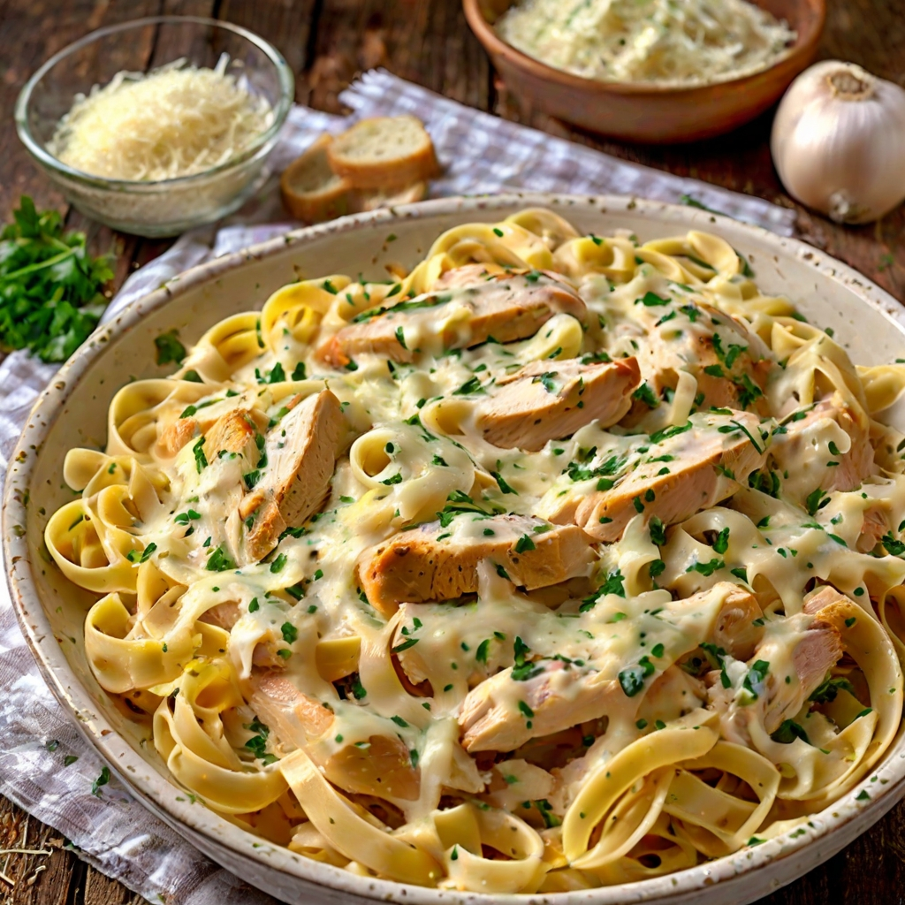

ODIN RECIPES
Welcome to July's recipes she found on the web and would like to share to the world because it saved her ass in college. Hope you find the time to cook yourself a good meal despite your busy schedule!


Chicken Alfredo
This Chicken Alfredo features pasta drenched in an ultra-rich and creamy sauce, topped with juicy strips of seared chicken.
Shakshuka
Shakshuka is a North African and Middle Eastern meal of poached eggs in a simmering tomato sauce with spices. It's easy, healthy and takes less than 30 minutes to make. Watch the video below to see how I make it in my kitchen!
Sweet and Sour Fish
Level up plain fried fish fillets into this tasty Sweet and Sour Fish! It's easy to prepare, economical, and perfect for your everyday meals or even for special occasions.